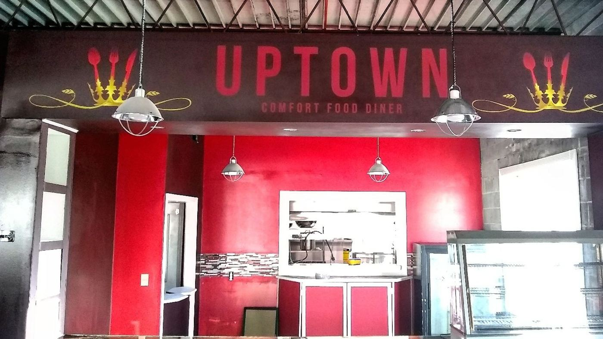

Uptown on Church St
A soul food diner in downtown Columbia with a relaxing dining room and kind staff. Guests say it’s a definite stop when you’re in Columbia.

A soul food diner in downtown Columbia with a relaxing dining room and kind staff. Guests say it’s a definite stop when you’re in Columbia.